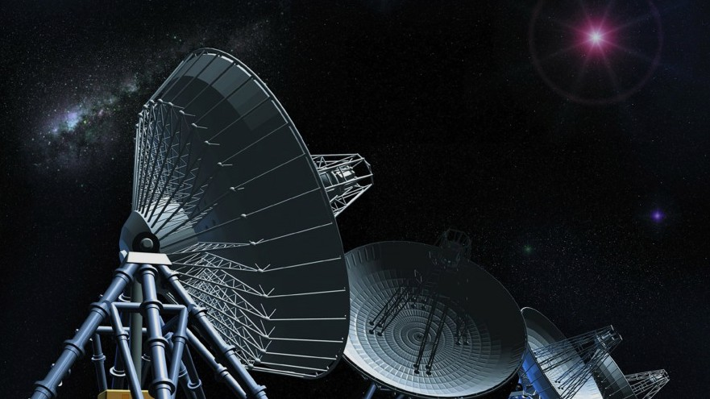

life on earth is defined by the following attributes: availability of liquid water , suitable temperature range, and size, which determines the composition of the planet and it's atmosphere.
"earth-like planets" have the characteristics to support life. To our knowledge, researches have proposed that there are approximately 4000 of these planets in the universe, each of which could host life.
exploration: The scope of the universe is unimaginably big. Because of this, few models are available for the specific study of the "earth-like planets". We aim to visualize these planets to give perspective about the possibility of life.
Scientists have identified ten planets that are extremely likely to be habitable.
Here's what they look like relative to their host stars.
Select an exoplanet to learn more

the future: the search for habitable planets is becoming a popular topic in space exploration. With the advancements of modern technology, we are now discovering more exoplanets than ever.
[NoUI Slider will go here (almost fully implemented]